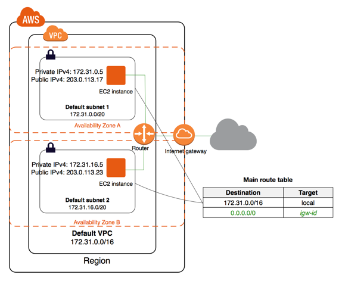

S3
S3 is short for Amazon Simple Storage Service. It is storage for the internet which stores data as objects within buckets.
Object
An object consists of a file and optionally any metadata that describes that file. (like inode with data)
Bucket
Buckets are the containers for objects are placed as a whole object
- control access
- view access logs for it and its objects
- choose the geographical region where S3 will store the bucket and its contents
Permission
basic usage steps
- sign up for S3
- create a bucket: specify unique name and region
- add an object to bucket
- you can view information about the object and download the object to local computer
- create a folder and copy the object into the new folder
- delete object, or empty bucket - delete all objects in the bucket, or delete a bucket
Command Line
Refer to aws s3 help page
Pattern Match
No support for UNIX style wildcards in path arguments. Use --exclude or --include paramters instead.
The order is important
| command | description |
|---|---|
--exclude "*" --include "*.txt" |
exclude all files except for files ending with .txt |
--include "*.txt" --exclude "*" |
exclude all files |
If the source target is a file, then the source directory will be used for pattern match
TODO Prefix
Path Type
- LocalPath
- absolute path or relative path
- S3Uri
- location of a S3 object, prefix, or bucket. For example
s3://mybucket/mykey
Commands
| command | description |
|---|---|
| ls | aws s3 ls s3://mybucket |
| cp | aws s3 cp ~/cities.csv s3://mybucket |
| mv | aws s3 mv s3://mybucket/cities.csv s3://mybucket/cities2.csv |
| rm | aws s3 rm s3://mybucket/cities2.csv |
| sync | recursively copies new and updated files from src to dst |
| mb | make bucket |
| rb | remove bucket |
| website | generate a static website, aws s3 website s3://my-bucket/ --index-document index.html |
| presign | Generate a pre-signed URL for S3 object |
TODO ACL
Issue
OptionsRequestDenied
Refer to https://aws.amazon.com/premiumsupport/knowledge-center/s3-optionsrequestdenied-error/
It seems a client-side error
- blocked by the web browser extension
- blocked by proxies or firewalls
- intermittent network connection problem
Try uploading files using AWS CLI command instead.
How To
Get the website URL
EC2
Elastic Compute Cloud is the service we can use to create and run VM in the cloud.
Term
- AMI
- Amazon Machine Image, pre-configured server templates to launch an instance
VPC
Virtual Private Cloud is a virtual networking layer for Amazon EC2 that enable you to launch AWS resources into a virtual network.
By default, there's already a default VPC for your instances. And we can create our own VPC and subnets.
Feature of EC2-VPC:
- static and persisted private IPv4 addresses to instance
- optionally associated an IPv6 CIDE block to VPC
- optionally assign IPv6 address to instance
- define multiple network interfaces to your instance
- manage security group membership
- egress/ingress filtering
- ACL
- run your instance on single-tenant hardware (?)
VPC information
- subnet
- internet gateway
- route table
- main route table (by default)
- custom route table
Key Concept
- isolate from other virtual network
- IP address range
- subnets
- public subnet that can connect to the internet
- private subnet for resources that won't be connected to the internet
- security groups
- configure route tables
Architecture
Default VPC
#+CAPTION  VPC may span multiple zones and there's a separated subnet in each zone.
Each instance that launch into a default subnet has
- a private IPv4 address
- a public IPv4 address
These instances can communicate with the internet through the internet gateway.
Nondefault VPC
- Only private IPv4 addresses are assigned
- instances can communicate with each other (even across the subnets)
- there's no internet gateway been attached to this VPC
Enable internet access

Internet gateway Diagram - Attach an internet gateway to this VPC
- associate an Elastic IP to the instance
NAT
For the scenario that to allow outbound traffic only by
- create a NAT device (has an Elastic IP address and connects to the internet through an internet gateway)
- and map multiple private IPv4 addresses to single IPv4 address
TODO IPv6
TODO VPN
TODO PrivateLink
Different from traditional network
TODO VPC Endpoints
TODO DNS
TODO Hardware tenancy
TODO Security Group
Acts as a virtual firewall to control the traffic for its associated instances.
Rules contains:
- inbound rules
- outbound rules
Associate a security group with an instance when launching the instance.
There's a default security group
inbound rules
IP + Protocol + Port Range + Comments
- public IPv4 address range of your home network
- Type
- Protocol
- Port Range
- Source
- Custom
- Anywhere
- My IP
- Description
outbound rules
How to
check the internet gateway info of VPC
display the main route table rules
get the custom route table info of VPC
- local route, allow instances to communicate with each other
- outside flow
check the default security group
get the subnet info of VPC
describe VPCs
Return list of VPC configurations
- CIDR block
- DHCP options set
- Tenancy: if allow tenancy of instances launched into the VPC
- is default
- Owner ID: Aws account
expose service inside a non-default VPC
- create a VPC (specify CIDR)
- attach an internet gateway
- create subnet (specify subnet's CIDR)
- create a custom route table and associate it with the subnet
launch an instance
assign an elastic IP address to your instance
- specify the subnet
TODO AMI
Reference
ECS
Elastic Container Service is the service to run Docker application on a scalable cluster.
EKS
EKS is short for Elastic Kubernetes Service which is a logical grouping of EC2 compute instances that run your containers. EKS works as a managed service that makes it easy for you to use Kubernetes on AWS without needing to install and operate the Kubernetes control plane.
A cluster consists of the control plane and the data plane.
There're two types of instances:
- master
- host the Kubernetes API server and control how, when, and where your container run
- worker
- compute instance where your containers actually run and process data
Pod is the basic component of the Kubernetes which includes containers and specifications for how they should run, networking, and storage.
etcd is a distributed key value store that lets you store and share data across a distributed cluster of machines. K8s's control plane data is stored in etcd.
TODO What is
control plane
node group
IAM identity mapping
security group
Steps to deploy
- Provision and EKS cluster
- Amazon EC2
- Connect to EKS
create cluster with eksctl
Refer to https://docs.aws.amazon.com/eks/latest/userguide/getting-started-eksctl.html
prerequisites
install awscli
configure awscli credential
Login with access key, secret access key, AWS region, and output format. This information is stored in a profile named default.
install eksctl
install kubectl
skip
create EKS cluster and worker nodes
create
verify
create cluster with AWS Management Console
Prerequisites
Prerequisites contain
- create an IAM role that k8s can assume to create AWS resources, such as Elastic Load balancing
- create a VPC and security group
create EKS service role in the IAM console
- select AWS service, EKS use case
- skip permission step, choose Next: Tags
- (optional) add metadata to the role by attaching tags
- review and assign a unique name for your role
- create role
create EKS Cluster VPC
- goto CloudFormation console
- select region and create stack
- use the Amazon S3 URL template source
- fill in URL
https://amazon-eks.s3-us-west-2.amazonaws.com/cloudformation/2019-02-11/amazon-eks-vpc-private-subnets.yaml - fill out the parameters
- Stack name: unique name
- VpcBlock: CIDR range for your VPC
- PublicSubnet01Block: CIDR range for public subnet1
- PublicSubnet02Block: CIDR range for public subnet2
- PrivateSubnet01Block: CIDR range for private subnet1
- PrivateSubnet02Block: CIDR range for private subnet2
- (optional) tag your stack resources
- review and create
- select the stack that is created and record the SecurityGroups value in the Outputs
- record VpcId for the VPC that was created
- record the SubnetIds for the subnets that were created
- Tag your private subnets so the k8s knows that it can use them for internal load balancers
- goto VPC console and choose Subnets
- select the two private subnets and create new tag
kubernetes.io/role/inernal-elbwith value1
SecurityGroups
Apply to the cross-account elastic network interfaces that are created in your subnets that allow the Amazon EKS control plane to communicate with your worker nodes.
VpcID
The VPC that worker nodes run on
SubnetIds
The subnets that your worker nodes are launched into.
install kubectl
skip
install awscli
skip
create EKS cluster
- goto EKS console
- Choose Create cluster
- fill in fields
- cluster name: uniqune name for your cluster
- kubernetes version: the version of kubernetes to use for your cluster
- Role ARN: the IAM role created before
- VPC
- Subnets: choose all private/public subnets created before
- Security groups
- API server endpoint access: private false
- Logging
- choose a cluster name and create
create a kubeconfig file
Verify by running kubectl get svc
launch and configure EKS worker nodes
launch worker nodes
- wait for your cluster status to show as
ACTIVE - go to CloudFormation console
- create work nodes stack
- use Amazon S3 template URL and fill the URL
https://amazon-eks.s3-us-west-2.amazonaws.com/cloudformation/2019-02-11/amazon-eks-nodegroup.yaml - specify details
- ClusterName must exactly match the name we used for EKS cluster
- NodeImageId is the AMI ID, for example
ami-07ebcae043cf995aa - KeyName is the EC2 Key Pair Name
- BootstrapArguments are the extra
kubeletarguments
- add tag to the stack resources
- review and create
- waiting for the creating has finished
- select the stack and record NodeInstanceRole in the output tab
- wait for your cluster status to show as
enable worker nodes to join your cluster
get the kubeconfig via
awk eks update-kubeconfigcommanddownload configure map yaml configuration
update the configure map and replace the
ARN of instance rolewith the NodeInstanceRoleapply the configuration
check the nodes with
kubectl get nodes
delete cluster
remove all service with external IP
delete the worker node AWS CloudFormation stack
aws cloudformation list-stacks --query StackSummaries[].StackName
aws cloudformation delete-stack --stack-name <worker-node-stack>delete the EKS cluster
delete the VPC AWS CloudFormation stack
aws cloudformation list-stacks --query StackSummaries[].StackName
aws cloudformation delete-stack --stack-name <my-vpc-stack>Command line
aws eks
| command | description |
|---|---|
| aws eks list-clusters | list all clusters |
| aws eks describe-cluster –name <cluster-name> | describe cluster |
| aws eks update-kubeconfig –kubeconfig ~/.kube/output –name <cluster-name> | create kubeconfig file |
| aws eks delete-cluster –name <cluster-name> | delete eks cluster |
eksctl
eksctl is a kubectl style like command line tool.
| command | description |
|---|---|
| eksctl get cluster | get clusters |
| eksctl get cluster -n <cluster-name> | show cluster details |
| eksctl delete cluster -n <cluster-name> | delete a cluster |
How To
Get the EC2 instance of the cluster
Filter the EC2 instance with VPCId
get the EKS clusters's metadata
Describe the cluster and record the VPCId.
filter the EC2 instance with VPC id
Landscape
TODO Region and Zone
CloudFormation
Declare all of your resoruces and dependencies in a template file to create and manage AWS infrastructure deployments predictably and repeatedly.
It can be used to leverage AWS products
- EC2
- Elastic Block Store
- Simple Notification Service
- Elastic Load Balancing
What is
TODO Stack
How to
get stack template
- Use command
aws cloudformation get-template --stack-name <stack-name> - Or check it in cloudformation, stack, template tab page.
Commands
| command | description |
|---|---|
| aws cloudformation list-stacks | list stacks |
| aws cloudformation describe-stacks –stack-name <stack-name> | describe stack |
| aws cloudformation get-template –stack-name <stack-name> | get stack's template |
| aws cloudformation delete-stack –stack-name <stack-name> | delete a stack |
TODO TODO
awscli command parameters
HOWTO
get current region
get access key
Or you can get the credential by check files ~/.aws/config and /.aws/credential